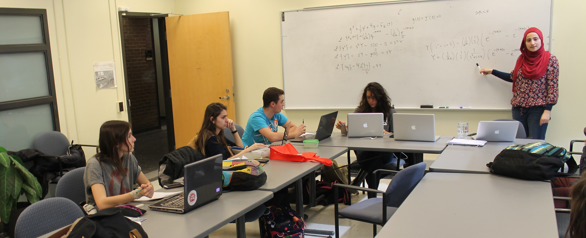

Welcome to the Engineering Peer Tutoring Service !

The Engineering Peer Tutoring Service is a free tutoring service for U0 and U1 engineering students sponsored by the Faculty of Engineering. Tutorial office hours are held on a weekly basis in the McGill Engineering Student Centre on the ground floor of the Frank Dawson Adams Building, Room 6B. (Tutoring was temporarily held in FDA 3 due to construction, but we are now in our normal room again)
EPTS tutors can answer some of the most challenging questions and help give students what they need to obtain results in their respective field of study. EPTS also offers direct contact with an upper-year student who has already been through the program!
Hiring Process
The application period will begin on August 15 and end on September 9. Interviews will be conducted on the second week of class September 12th-16th. To apply, applicants must specify which classes they want to tutor as well as send a copy of their transcript, and resume to epts@mcgilleus.ca by the deadline. Applicants will be contacted about interviews by the latest on September 11th.
In order to be eligible all applicants must meet the following requirements:
• Currently be an undergraduate student in the faculty of Engineering
• Have completed their first year at McGill
• Have achieved at least an A- in the classes they tutor
Advisory Committee
Dr. Chidinma Offoh-Robert (Director, Engineering Student Centre) and Professor David Frost (Associate Dean, Student Affairs) form the advisory committee. They and the student EPTS manager, Sinan Abi Farraj, form the link between the tutors and the McGill administration and oversee operation of the service. They also work to ensure that EPTS receives continued funding.